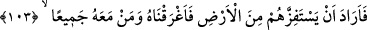
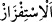
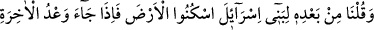
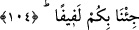

İlimden murad amelden başkası değildir
Hâfız da şöyle der:
Amelsizlikten dünyada melûl olan sâdece ben değilim
Âlimlerin üzüntüsü de amelsiz ilimlerindendir
“Ey Firavun! Ben de senin hakikaten mahvolduğunu” hayırdan uzaklaştırılmış, şerle
yoğrulmuş veya helâk olmuş “sanıyorum!” dedi.”
et-Te’vîlâtü’n-Necmiyye’de şöyle der: “Yâni, basîretsiz ve akılsız olduğunu
zannediyorum. Zan iki türlüdür: Yalancı zan (zann-ı kâzib), doğru zan (zann-ı sâdık).
Firavun’un zannı yalancı zandı, Mûsâ’nınki ise doğru zandı.”
103. Derken, Firavun onları ülkeden çıkarmak istedi. Bu yüzden biz onu ve
maiyetindekilerin hepsini (denizde) boğduk.
“Derken,” yalancı zannının neticelerinden olarak “Firavun onları ülkeden” Mısır
topraklarından veya öldürmek ve kökünü kazımak sûretiyle yeryüzünden “çıkarmak
istedi.” Mûsâ (a.s.)’ı ve kavmini yerinden sürmek ve uzaklaştırmak istedi. “Bu yüzden
biz onu” Firavun’u “ve maiyetindekilerin” Kıptîler’in “hepsini (denizde) boğduk.”
Mûsâ ve kavmini doğru zannının neticelerinden olarak kurtardık. el-İrşâd’da şöyle der:
“Hilesini ters yüz ettik. Onu ve kavmini boğarak yerlerinden çıkardık.
“__WORD__” bir şeyi yerinden koparmak, rahatsız etmek demektir.
104. Arkasından da İsrailoğulları’na: “O topraklarda oturun! Ahiret vaadi
tahakkuk edince, hepinizi toplayıp bir araya getireceğiz” dedik.
“Arkasından da” yâni Firavun’un boğulmasından sonra “İsrailoğulları’na” Yâkub’un
evladlarına, onun sizi çıkarmak istediği “O topraklarda oturun!” Daha sonra
İsrailoğulları’nın oraya yerleştiği sâbit ise bu topraklar Mısır topraklarıdır veya mutlak
olarak yeryüzüdür. “Âhiret vaadi” yâni kıyâmet saati “tahakkuk edince, hepinizi” sizi
ve onları mahşerde birbirine karışmış bir topluluk olarak “toplayıp bir araya
getireceğiz” saîdleri ve şakîleri birbirinden ayırarak aranızda hükmedeceğiz “dedik.” “